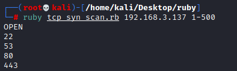
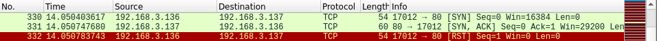
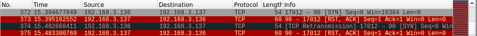

script: TCP SYN scan
TCP SYN flood: Famous DOS attack based on TCP SYN packets. An attacker sends a flood of TCP SYN packets, forcing the target host to allocate a lot of resources reserved to the incoming connections until a crash happens.
TCP SYN scan: port scanner that avoids finalizing the tcp 3-way handshake. Like when we use nmap -sS instead of nmap -sT
Single Port scan:


Ruby Script
# TCP SYN PORT SCANNER
#USAGE:
# ruby tcp_syn_scan.rb [host] [start_port]-[end_port]
require 'packetfu'
include PacketFu
def main(host,start_port,end_port)
open = []; closed = []
#start packet sniffer
start_capture(host,open,closed,start_port,end_port)
#send the TCP SYN packet for each port we want to test
send_tcp_syn(host,start_port,end_port)
#The ports that are filtered are the ones that are not opened or closed
filtered=(start_port..end_port).to_a - (open+closed)
puts "OPEN",open if !open.empty?
puts "FILTERED",filtered if !filtered.empty?
end
def send_tcp_syn(host,start_port,end_port)
#create a TCPPacket
t = TCPPacket.new(:config => Utils.whoami?)
#set the correct mac address
# --> UNCHANGED: default gateway, because the host is outside the network
# --> CHANGE: host mac address coming from ARP request if the host belongs to the network
t.eth_daddr = Utils.arp(host) if Utils.arp(host)
t.ip_daddr = host
t.tcp_flags.syn = 1
#for each port
start_port.upto(end_port) do |port|
t.tcp_dport = port
t.recalc
#send a TCP SYN packet, two times to avoid packets loss
# sleep method avoid creating a flood of SYN packets against the target host
# otherwise the target host may become suspicious
2.times.each { t.to_w;sleep(0.02)}
end
sleep(1)
end
def start_capture(host,open,closed,start_port,end_port)
#a new thread is required;
# because we sniff TCP SYN+ACK and RST+ACK at the same time we send TCP SYN.
# otherwise some responses could be dropped by the PacketFu captured stream, because overloaded by a lot of packets
Thread.new{
cap = Capture.new
cap.capture(:filter => ("tcp and src host "+host) )
cap.stream.each do |raw_packet|
tcp_packet = Packet.parse(raw_packet)
port = tcp_packet.tcp_sport.to_i
next if !port.between?(start_port,end_port)
flags = tcp_packet.tcp_flags
open.push(port) if (flags.syn==1 && flags.ack==1 && !open.include?(port))
closed.push(port) if (flags.rst==1 && flags.ack==1 && !open.include?(port))
end
}
end
begin
host = ARGV[0]
# EXAMPLE: from 10-200 argument we have
# start_port = 10 and end_port = 200
start_port,end_port = ARGV[1].split("-").map{|x| x.to_i}
main(host,start_port,end_port)
end

◇ port open:

◇ port closed:
as we can see from wireshark the packet is transmitted 2 times, but this only because is been specified in the script
